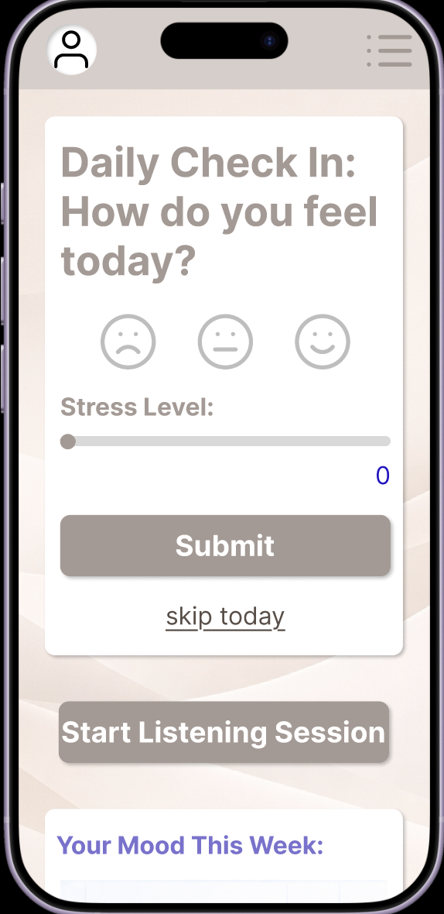
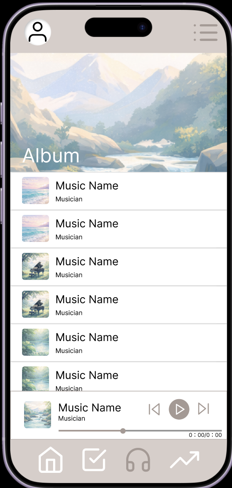
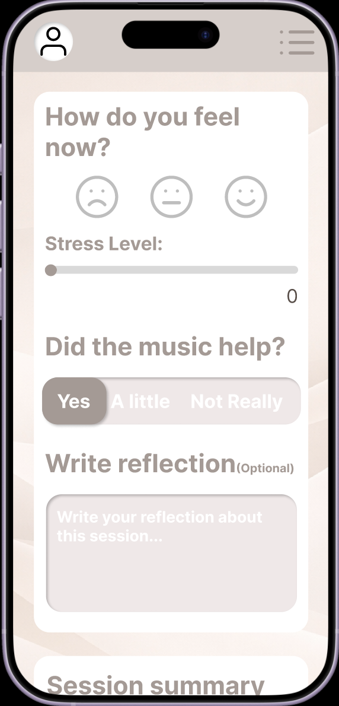

Track 3 · Music & Health
A mobile application that supports mental health through guided music listening.
Why MindMelody?
Affordability
No paywall for core features.
Privacy
Compliant with HIPAA; all self-recorded data and user information are protected.
Personalized Experience
Feelings change! Playlists are updated on a daily basis to constantly support your well-being.

The core feature is a mood tracker that allows users to log how they’re feeling throughout the day by controlling a scrollbar that measures their stress levels.

Based on the user’s responses, the application generates a personalized playlist tailored to what they logged.

After each listening session, users record their mood again to reflect how they feel. Based on this data, the application refines the playlist with more targeted songs.